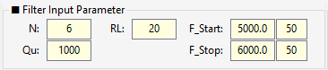
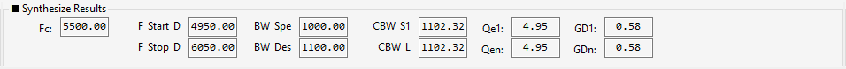
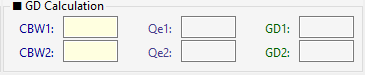
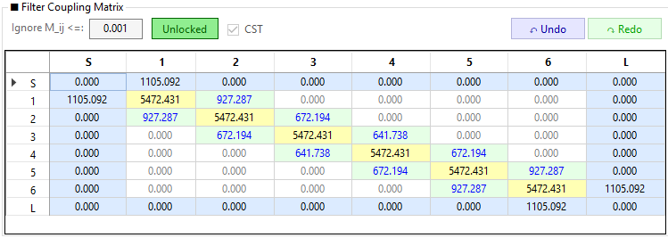
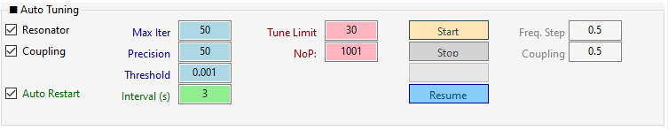
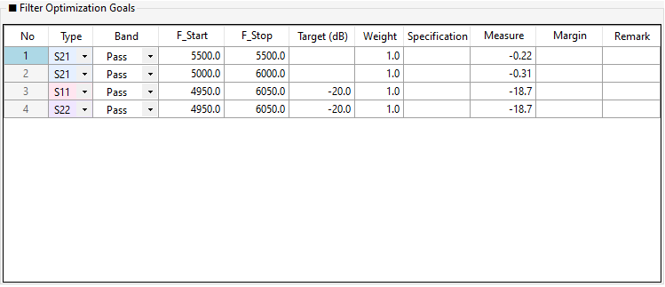
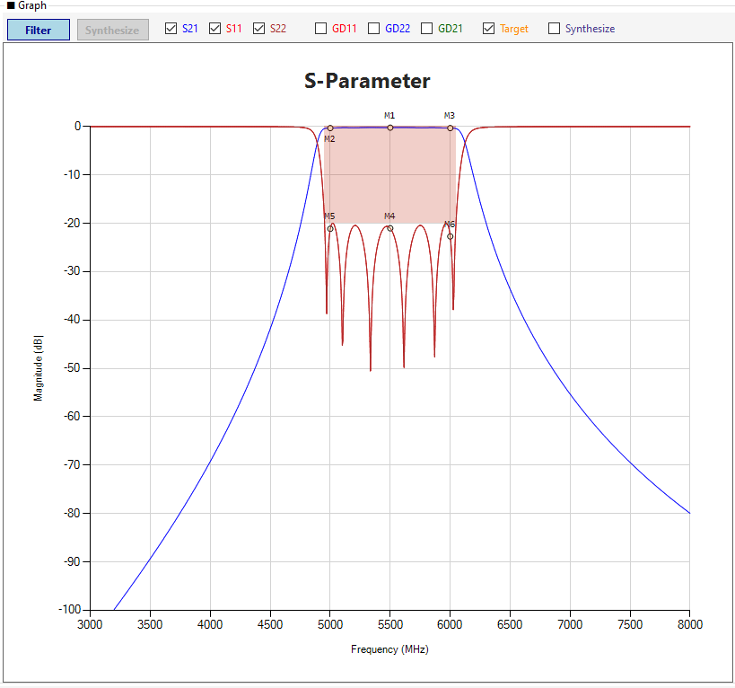
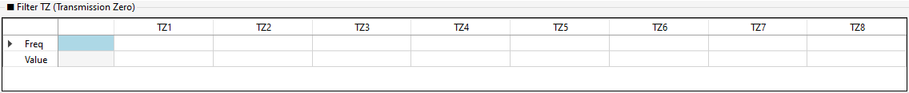
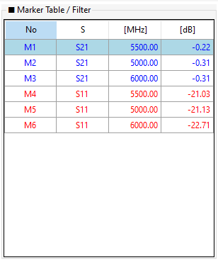

Chapter 3. 화면 구성 및 UI 둘러보기¶
CMW2026 프로그램을 처음 실행하면 아래와 같은 화면이 나타납니다. 이 장에서는 각 영역의 명칭과 역할을 상세히 설명합니다.
3.1 전체 레이아웃 개요¶
프로그램 화면은 크게 상단 영역, 왼쪽 패널, 오른쪽 패널의 3개 주요 구역으로 나뉩니다. 그 위에 프로그램 전체를 제어하는 메뉴바가 위치합니다. 아래는 프로그램 실행 직후의 전체 화면입니다.
그림 3-1: CMW2026 프로그램 초기 전체 화면 (클릭 시 확대)
TIP
화면의 각 영역은 마우스 드래그로 크기를 조절할 수 있습니다. 특히 Window Setting에서 비율을 % 단위로 정밀하게 조정할 수 있습니다.
3.2 메뉴바 (Menu Bar)¶
프로그램 최상단의 메뉴바는 프로젝트 관리, 파일 입출력, 도움말 접근을 담당합니다. 화면 어디에서든 접근 가능하며, 대부분의 메뉴 항목은 단축키를 제공합니다.

그림 3-2: 메뉴바 전체 구성 (File / Export / Import / Design Guide / Help)
메뉴바는 5개의 메뉴로 구성됩니다.
3.2.1 File 메뉴¶
프로젝트 저장/열기 및 프로그램 종료를 담당합니다.
| 항목 | 단축키 | 기능 |
|---|---|---|
| Save File | Ctrl+S |
현재 파일명으로 프로젝트 저장 (CSV) |
| Save As File | Ctrl+Shift+S |
다른 이름으로 프로젝트 저장 |
| Open File | Ctrl+O |
저장된 CSV 프로젝트 열기 |
| Clear All | - | 모든 데이터를 초기화하고 초기 실행 상태로 복귀 |
| Exit | - | 프로그램 종료 |
WARNING
Clear All은 모든 매트릭스, Goals, 마커, TZ 데이터를 초기화합니다. 실행 전 확인 대화상자가 표시되며, 이 작업은 되돌릴 수 없습니다.
상세 사용법은 Chapter 9. 파일 입출력을 참고하세요.
3.2.2 Export 메뉴¶
계산 결과와 그래프를 외부 파일로 내보냅니다.
| 항목 | 단축키 | 기능 |
|---|---|---|
| Graph Image | Ctrl+Shift+G |
그래프와 마커 테이블을 이미지(PNG/JPG/BMP) + 정보 텍스트(.txt)로 저장 |
| Matrix | - | 커플링 매트릭스를 CSV로 내보내기 |
| Export Goals | - | Optimization Goals를 CSV로 내보내기 |
| K-Inverter | - | 커플링 값을 K-인버터(임피던스 인버터) 값으로 변환하여 CSV로 저장 |
| s2p File | - | S-파라미터를 Touchstone(.s2p) 포맷으로 내보내기 |
| Circuit Schematic | - | 커플링 매트릭스 기반 회로 개략도를 이미지로 저장 |
상세 사용법은 Chapter 9. 파일 입출력을 참고하세요.
3.2.3 Import 메뉴¶
외부 파일을 불러와 프로젝트에 반영합니다.
| 항목 | 기능 |
|---|---|
| Matrix | 커플링 매트릭스 CSV를 불러와 현재 프로젝트에 반영 |
| Import Mask | Optimization Goals(마스크)를 CSV로 불러오기 |
| sNp File | CST/HFSS 등에서 추출한 Touchstone(sNp) 파일을 불러와 커플링 매트릭스를 자동 추출 |
TIP
sNp File Import 시 포트 재배열(CST → CMW)이 자동으로 처리되며, Fi / Qe / M / CBW_S2 / CBW_Ln1이 자동 추출됩니다. 상세 내용은 Chapter 9를 참고하세요.
3.2.4 Design Guide 메뉴¶
필터 타입별 설계 가이드를 제공하는 메뉴입니다.
- Cavity Filter Design: 캐비티 공진기 기반 필터 설계 가이드
- Mono Block Filter Design: 모노블럭 세라믹 필터 설계 가이드
- CWG Filter Design: 원형 도파관 필터 설계 가이드
NOTE
현재 버전에서는 Design Guide 메뉴가 비활성화(회색 표시) 상태입니다. 향후 버전에서 활성화될 예정입니다.
3.2.5 Help 메뉴¶
프로그램 정보 및 문서를 제공합니다.
| 항목 | 기능 |
|---|---|
| About | 프로그램 정보, 버전, 개발자, 기술 지원 연락처 |
| Filter Theory | Chebyshev 합성, S-파라미터 계산, TZ 이론 등 상세 이론 문서 |
| User Guide | 본 사용자 매뉴얼과 동일한 내용의 HTML 문서 |
| AI Design | AI를 활용한 프로그램 개발 가이드 |
| 🏗️ 프로젝트 구조 개요 | 소스 코드 파일 구조 및 역할 문서 |
| 🗺️ Roadmap | 향후 고도화 로드맵 문서 |
Help 메뉴의 각 항목은 별도의 대화상자로 표시되며, 대화상자 우측 하단의 닫기 (Close) 버튼으로 닫을 수 있습니다.
3.3 상단 영역 (Top Panels)¶
상단 영역은 프로그램의 핵심 파라미터를 입력하고, 합성된 결과를 한눈에 확인하는 곳입니다.
3.3.1 Filter Input Parameter (필터 입력 파라미터)¶
설계하고자 하는 필터의 기본 스펙을 입력하는 곳입니다.
- N: 필터 차수 (공진기 수). 높을수록 선택도가 좋아집니다.
- RL: 반사 손실(Return Loss, dB). 보통 15~25dB를 입력합니다.
- Qu: 무부하 Q (Unloaded Q). 재료의 손실 특성입니다.
- F_Start / F_Stop: 통과대역의 시작 및 종료 주파수 (MHz)입니다.
- L_Guard / R_Guard: 좌우 가드(Guard) 대역폭입니다.

그림 3-3: Filter Input Parameter 영역
WARNING
값을 입력한 후 반드시 Enter 키를 눌러야 시스템에 확정됩니다. 마우스로 다른 곳을 클릭하면 값이 반영되지 않을 수 있습니다.
3.3.2 Synthesize Results (합성 결과)¶
입력된 파라미터를 바탕으로 Chebyshev 합성이 완료된 결과를 보여줍니다. (모두 읽기 전용)
- Fc: 기하 평균 중심 주파수
- BW_Spec / BW_Design: 스펙 대역폭 및 설계 대역폭 (Guard 포함)
- CBW_S1 / CBW_Ln: Source 및 Load의 커플링 대역폭
- Qe1 / Qen: 외부 Q 값
- GD1 / GDn: 입출력단의 Group Delay (ns)

그림 3-4: Synthesize Results 영역
3.3.3 GD Calculation (독립 계산기)¶
간단한 계산기 기능입니다. CBW 값을 입력하면 현재 매트릭스를 건드리지 않고도 해당하는 Qe와 GD 값을 즉시 계산해 줍니다. (Enter 키로 계산)

그림 3-5: GD Calculation 영역
3.3.4 Window Setting (화면 비율 조정)¶
- Left Rate(%): 왼쪽 패널의 화면 비율을 조정합니다.
- Table Rate(%): 오른쪽 그래프와 마커 테이블의 비율을 조정합니다.
그림 3-6: Window Setting 영역 (클릭 시 확대)
3.4 왼쪽 패널 (Left Panel)¶
3.4.1 Filter Coupling Matrix (커플링 매트릭스)¶
필터의 물리적 결합 구조를 나타내는 가장 핵심적인 표입니다.
- 셀을 클릭하고 값을 입력하거나 마우스 휠을 굴려 값을 조정할 수 있습니다.
- 색상 범례:
- 🟨 노란색 (대각선): 공진 주파수 (Fi)
- 🟩 연녹색 (대각선 인접): 주 커플링 (Main Coupling)
- 🟦 하늘색 (Source/Load): 외부 Q (Qe)
- ⬜ 흰색 (그 외): 교차 커플링 (Cross Coupling)

그림 3-7: Filter Coupling Matrix 영역
- Unlocked/Locked 버튼: 매트릭스 전체의 편집 가능 여부를 토글합니다. 특정 셀만 우클릭하여 개별 잠금(Lock) 처리할 수도 있습니다.
- Ignore M_ij <=: 이 값(기본 0.001) 미만의 커플링은 회색으로 표시되며, Auto Tuning 시 무시됩니다.
- Undo / Redo: 매트릭스 편집을 실행 취소(
Ctrl+Z)하거나 다시 실행(Ctrl+Y)합니다. 최대 50단계까지 기억합니다.
3.4.2 Auto Tuning (자동 최적화)¶
매트릭스를 자동으로 튜닝하여 Optimization Goals(목표)를 만족시키는 알고리즘 설정 창입니다.

그림 3-8: Auto Tuning 영역
3.4.3 Optimization Goals (최적화 목표 마스크)¶
Auto Tuning이 달성해야 할 목표(마스크)를 정의합니다. Type(S11/S21/S22), Band(Pass/Stop), 주파수 범위, Target(dB), Weight 등을 설정합니다.

그림 3-9: Optimization Goals 영역
3.4.4 Log (로그)¶
프로그램의 모든 동작 로그가 시간순으로 표시됩니다. 각 로그는 [HH:mm:ss] [레벨] 메시지 형식으로 기록됩니다.
- 레벨: INFO, DEBUG, WARNING, ERROR, SUCCESS
- 다중 선택:
Ctrl또는Shift키로 여러 항목 선택 가능 - 복사:
Ctrl+C(선택 복사),Ctrl+Shift+C(전체 복사) - 전체 선택:
Ctrl+A - 로그 지우기: 우클릭 → 로그 지우기
TIP
오류 발생 시 로그에서 ERROR 레벨 항목을 확인하면 원인 파악에 도움이 됩니다.
3.5 오른쪽 패널 (Right Panel)¶
3.5.1 Graph (S-Parameter 파형)¶
계산된 S-파라미터와 Group Delay가 시각화되는 차트입니다.
- 상단 버튼: Synthesizer 모드(합성)와 Filter 모드(구현/튜닝)를 전환합니다.
- 체크박스: S11, S21, S22 및 GD(Group Delay) 파형의 표시 여부를 제어합니다.
- Overlay Synth (Filter 모드 전용): Filter 모드에서 체크 시 Synth 파형을 오버레이로 표시합니다. 파형 비교 목적으로 사용되며 Synth 마커는 표시되지 않습니다.

그림 3-10: Graph 영역
3.5.2 Filter TZ / Synthesize TZ (전송 영점 테이블)¶
- Filter TZ: CBW 모드에서 Cross-Coupling에 의해 파형에 나타나는 Notch(전송 영점)를 자동 검출하여 표시합니다. 표시 전용(읽기 전용)이며 매트릭스와 직접 연동되지 않습니다.
- Synthesize TZ: Synthesize 모드에서 사용자가 직접 목표 TZ를 입력/편집하는 테이블입니다.

그림 3-11: TZ 테이블 영역
3.5.3 Marker Table (마커 리스트)¶
그래프에서 클릭하여 생성한 마커(수동 마커) 또는 Goals에 의해 자동 생성된 마커의 주파수와 측정값(Measure)을 리스트로 보여줍니다.

그림 3-12: Marker Table 영역
3.5.4 Axis Control (축 범위 제어)¶
그래프의 X축(주파수), Y축(dB), GD축(ns)의 시작(Start), 종료(Stop), 눈금 간격(Step)을 직접 입력하여 화면을 고정합니다.
그림 3-13: Axis Control 영역 (클릭 시 확대)
3.5.5 Temp Simulation (온도 시뮬레이션)¶
온도 변화에 따른 주파수 이동(Δf)과 Q 저하(ΔQu)를 시뮬레이션합니다. 값을 입력하고 Enter를 누르면 점선 형태의 Temp 파형이 그래프에 추가됩니다.
그림 3-14: Temp Simulation 영역 (클릭 시 확대)
3.5.6 Average Loss (평균 손실)¶
설정한 대역폭(BW) 구간 내에서의 평균 삽입 손실(Insertion Loss)을 Bottom, Center, Top 영역별로 계산하여 보여줍니다.
그림 3-15: Average Loss 영역 (클릭 시 확대)